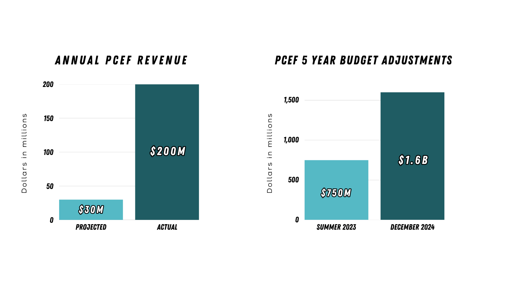

The Portland Clean Energy Fund
PCEF keeps coming up as the most likely way to close the city's funding gap. It's also the most argued-about. Here's what it actually is, what it's allowed to fund, and why nobody can just decide to spend it on the Moda Center unilaterally.

Two things you'll hear repeated a lot: supporters point out PCEF has real money available; critics point out that money is already spoken for over the next five years, and pulling any of it for the Moda Center means something else in the pipeline gets delayed or cut. Both of those are true at the same time; the fund is larger than expected, and its existing commitments are real.
Either way, it's not the city's call to make. The PCEF Committee, the independent board that oversees the fund, ultimately controls where any of this money goes, and any Moda Center funding would still need to meet PCEF's own qualifications.
The fund has outpaced its own projections. Here's the timeline of how that surplus became today's $1.6B plan:
- 2018Voters approve PCEF; the city projects about $30M a year in revenue.3
- TodayActual revenue runs roughly $200M a year, about 7x the original estimate.4
- Summer 2023The five-year Climate Investment Plan is adopted at $750M.5
- Dec 2023A City Budget Office memo forecasts an additional $540M in revenue over the same five years.6
- Dec 2024City Council formally amends the plan to $1.6B, roughly doubling it.7 Most of that total is already allocated to specific programs.
- KATU, "Should climate money renovate Moda Center? Portland leaders weigh in," May 2026, citing a poll from The Oregonian. (KATU)
- Same KATU article, citing statements from Novick, Green, and Avalos opposing use of PCEF funds for the renovation. (KATU)
- Oregon Physicians for Social Responsibility, 2018 PCEF ballot campaign page: "This measure will raise $30 million per year." (oregonpsr.org)
- Portland Mercury, "PCEF's Community Benefits": "the program has raised about $200 million a year since tax collection began in 2019." (Portland Mercury)
- Portland.gov: in Summer 2023, the PCEF Committee and City Council adopted the original Climate Investment Plan at $750M through FY 2028–29 (Ordinance No. 191463). (Portland.gov)
- Portland.gov, PCEF CIP amendment ordinance: "In December 2023, the City Budget Office (CBO) released a memo forecasting an additional $540 million in revenue for PCEF over the next five years." (Portland.gov)
- OPB, "Portland's climate action fund could double spending over the next five years," Dec 6, 2024; Portland Mercury, "Awash With Cash," Dec 23, 2024. City Council amended the CIP to $1.591B (~$1.6B) that December. (OPB, Portland Mercury)
PCEF has its own board, and that board has to approve any use of funds, including whether Moda Center renovations qualify. The city can't unilaterally redirect PCEF money; it has to fit PCEF's actual charter (clean energy, climate resilience, workforce development).
What that could look like here, based on public comments from councilors: Jamie Dunphy has said he'd support it if the renovation plans replaced diesel generators and made real energy-efficiency upgrades. Keith Wilson has floated the idea that PCEF funds could work if the upgrades made the Moda Center a better emergency/disaster shelter for the community. Both are plausible fits under PCEF's charter; neither is a done deal, because the Blazers haven't submitted specific plans yet for the board to evaluate.
Public sentiment currently leans toward the critics: a 2026 Oregonian poll found 55% of Portland voters opposed using PCEF for the renovation.1 On the council, Steve Novick, Mitch Green, and Candace Avalos have each said directly they oppose using PCEF for this purpose.2
The numbers, for context: PCEF originally projected about $30M a year in revenue when voters approved it in 2018.3 It's actually bringing in roughly $200M a year.4 The fund's five-year Climate Investment Plan was originally set at $750M in Summer 2023.5 A City Budget Office memo issued in December 2023 forecast an additional $540M in revenue over the same five years.6 In December 2024, the City Council formally amended the plan to $1.6B, roughly doubling it.7 Most of that total is already allocated to specific programs.